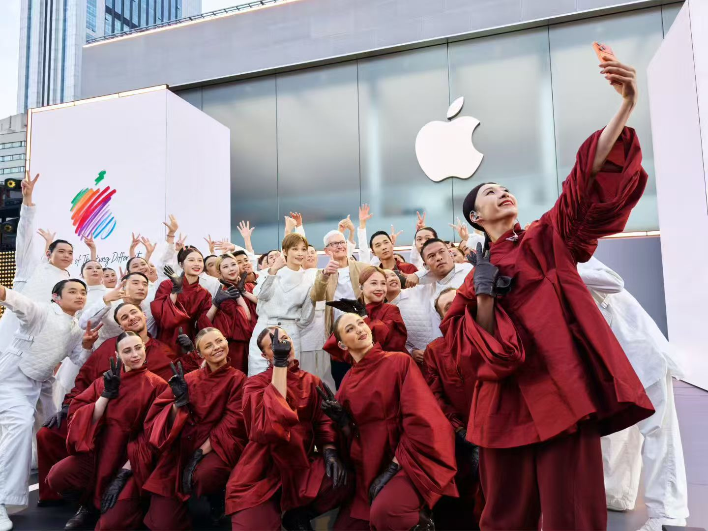
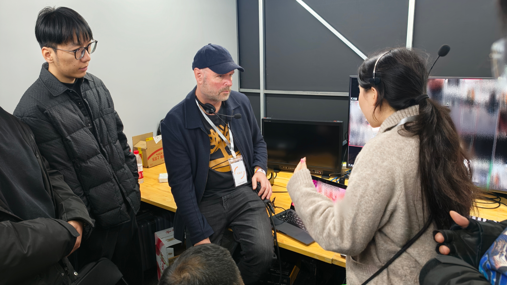

项目概述 Overview
Apple 公司成立 50 周年全球系列庆祝活动的亚太首站、全球第二站。2026 年 3 月 18 日于成都太古里 Apple 零售店户外舞台举办，苹果 CEO 蒂姆·库克（Tim Cook）亲临现场。著名歌手李宇春登台献唱，吸引大量市民与媒体到场。
The first Asia-Pacific stop and second global event of Apple's 50th anniversary celebrations, held at Apple Taikoo Li Chengdu on March 18, 2026. Apple CEO Tim Cook attended in person, and Chinese pop icon Chris Lee (Li Yuchun) performed on a multi-level outdoor stage.
活动同时面向全球进行直播推流，是苹果在中国市场的重要品牌事件，受到新华社、中新网、澎湃新闻、MacRumors 等中外媒体的广泛报道。
The event was live-streamed globally and widely covered by Chinese and international media including Xinhua News Agency, China News, The Paper, and MacRumors.
工作内容 What I Did

负责接待与陪同外方电视导演/顾问，为其在成都期间提供全程中英双语翻译与现场协调，确保外方团队与本地制作方之间沟通无障碍。为导播团队提供全程中英双语技术支持与实时翻译协调，负责外方导演团队与本地技术团队之间的需求对接、流程沟通与执行细节传达，确保直播推流过程中音频、视频及舞美多部门在语言零障碍下高效协作。
Responsible for receiving and accompanying the international TV director/consultant, providing full bilingual interpretation and on-site coordination throughout their stay in Chengdu. Provided full bilingual technical support and real-time translation for the broadcast director team, serving as the communication bridge between the international directorial team and local technical crew, ensuring seamless cross-language coordination across audio, video, and stage departments during the live stream.
前期参与技术协调会议，翻译技术需求文档与流程方案；彩排及演出期间全程在导播位进行实时双语响应，协助导演组准确下达技术指令，保障全球直播推流的顺利执行。
Participated in pre-production technical coordination meetings, translating technical briefs and run-downs. During rehearsals and the live show, provided real-time bilingual response at the broadcast position, helping the director team deliver precise technical cues for a flawless global live stream.
（在此处添加更多工作内容描述）